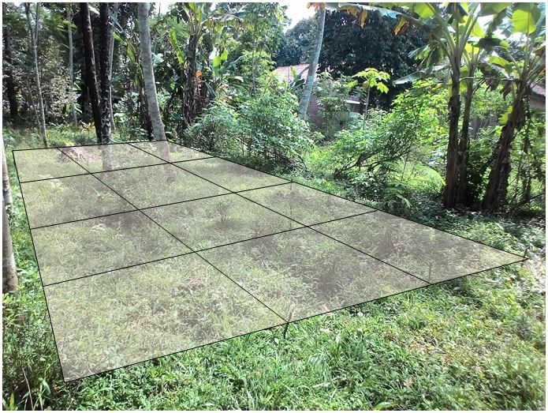

Tampilan Data
Metoda Pengukuran
Pengukuran dilakukan di sebuah lahan kosong di Kecamatan Karanglewas, Kabupaten Banyumas. Dengan membagi lahan tersebut menjadi kapling berukuran 4x3 dengan tiap kapling berukuran 2x1.5 m. Pengukuran dilakukan tiap jam selama 24 jam dengan total 20 titik pengukuran sehingga diperoleh kontur kelembapan dan temperatur sebagai berikut.
Grafik Kelembapan dan Temperatur Tanah